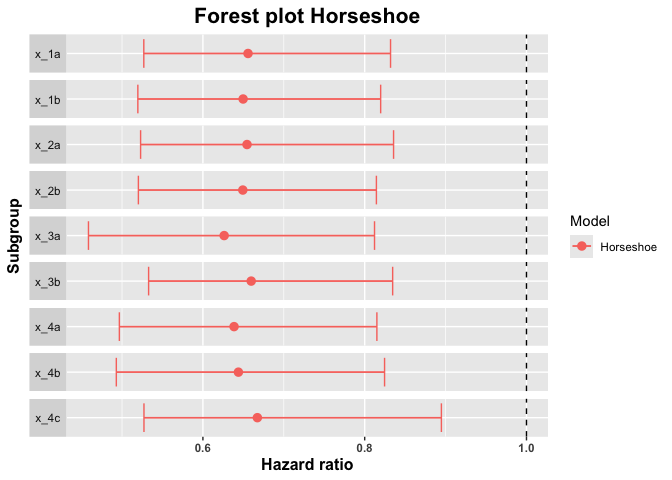

Subgroup analyses are routinely performed in clinical trial analyses. From a methodological perspective, two key issues of subgroup analyses are multiplicity (even if only predefined subgroups are investigated) and the low sample sizes of subgroups which lead to highly variable estimates, see e.g. Yusuf et al (1991). This package implements subgroup estimates based on Bayesian shrinkage priors, see Carvalho et al (2019). In addition, estimates based on penalized likelihood inference are available, based on Simon et al (2011). The corresponding shrinkage based forest plots address the aforementioned issues and can complement standard forest plots in practical clinical trial analyses.
Installation
Please note that on Windows, you will need to install Rtools, because you will need to have a working C++ toolchain to compile the Stan models.
Release
You can install the current release version of bonsaiforest from CRAN with:
install.packages("bonsaiforest")Development
You can install the development version of bonsaiforest from GitHub with:
# install.packages("remotes")
remotes::install_github("insightsengineering/bonsaiforest")Getting started
See the introductory vignette or get started by trying out the example:
library(bonsaiforest)
str(example_data)
#> 'data.frame': 1000 obs. of 14 variables:
#> $ id : int 1 2 3 4 5 6 7 8 9 10 ...
#> $ arm : Factor w/ 2 levels "0","1": 1 1 1 1 2 2 2 2 2 1 ...
#> $ x_1 : Factor w/ 2 levels "a","b": 2 2 1 1 2 1 1 2 2 1 ...
#> $ x_2 : Factor w/ 2 levels "a","b": 1 2 1 1 1 2 2 1 2 2 ...
#> $ x_3 : Factor w/ 2 levels "a","b": 2 1 2 1 2 2 2 1 2 2 ...
#> $ x_4 : Factor w/ 3 levels "a","b","c": 2 1 3 3 3 3 3 1 3 3 ...
#> $ x_5 : Factor w/ 4 levels "a","b","c","d": 4 4 1 1 4 1 3 4 4 3 ...
#> $ x_6 : Factor w/ 2 levels "a","b": 2 1 2 2 2 1 2 2 2 2 ...
#> $ x_7 : Factor w/ 2 levels "a","b": 2 1 2 2 2 1 1 2 2 2 ...
#> $ x_8 : Factor w/ 3 levels "a","b","c": 3 2 1 3 3 3 1 1 2 3 ...
#> $ x_9 : Factor w/ 2 levels "a","b": 2 1 2 2 2 1 1 2 2 2 ...
#> $ x_10 : Factor w/ 3 levels "a","b","c": 3 3 3 3 3 1 2 2 2 3 ...
#> $ tt_pfs: num 0.9795 3.4762 1.7947 0.0197 2.2168 ...
#> $ ev_pfs: num 1 0 1 1 0 0 0 0 0 0 ...
horseshoe_model <- horseshoe(
resp = "tt_pfs", trt = "arm",
subgr = c("x_1", "x_2", "x_3", "x_4"),
covars = c(
"x_1", "x_2", "x_3", "x_4", "x_5",
"x_6", "x_7", "x_8", "x_9", "x_10"
),
data = example_data, resptype = "survival",
status = "ev_pfs", chains = 2, seed = 0,
control = list(adapt_delta = 0.95)
)
#> Compiling Stan program...
#> Start sampling
#>
#> SAMPLING FOR MODEL 'anon_model' NOW (CHAIN 1).
#> Chain 1:
#> Chain 1: Gradient evaluation took 0.00022 seconds
#> Chain 1: 1000 transitions using 10 leapfrog steps per transition would take 2.2 seconds.
#> Chain 1: Adjust your expectations accordingly!
#> Chain 1:
#> Chain 1:
#> Chain 1: Iteration: 1 / 2000 [ 0%] (Warmup)
#> Chain 1: Iteration: 200 / 2000 [ 10%] (Warmup)
#> Chain 1: Iteration: 400 / 2000 [ 20%] (Warmup)
#> Chain 1: Iteration: 600 / 2000 [ 30%] (Warmup)
#> Chain 1: Iteration: 800 / 2000 [ 40%] (Warmup)
#> Chain 1: Iteration: 1000 / 2000 [ 50%] (Warmup)
#> Chain 1: Iteration: 1001 / 2000 [ 50%] (Sampling)
#> Chain 1: Iteration: 1200 / 2000 [ 60%] (Sampling)
#> Chain 1: Iteration: 1400 / 2000 [ 70%] (Sampling)
#> Chain 1: Iteration: 1600 / 2000 [ 80%] (Sampling)
#> Chain 1: Iteration: 1800 / 2000 [ 90%] (Sampling)
#> Chain 1: Iteration: 2000 / 2000 [100%] (Sampling)
#> Chain 1:
#> Chain 1: Elapsed Time: 9.899 seconds (Warm-up)
#> Chain 1: 7.865 seconds (Sampling)
#> Chain 1: 17.764 seconds (Total)
#> Chain 1:
#>
#> SAMPLING FOR MODEL 'anon_model' NOW (CHAIN 2).
#> Chain 2:
#> Chain 2: Gradient evaluation took 0.000117 seconds
#> Chain 2: 1000 transitions using 10 leapfrog steps per transition would take 1.17 seconds.
#> Chain 2: Adjust your expectations accordingly!
#> Chain 2:
#> Chain 2:
#> Chain 2: Iteration: 1 / 2000 [ 0%] (Warmup)
#> Chain 2: Iteration: 200 / 2000 [ 10%] (Warmup)
#> Chain 2: Iteration: 400 / 2000 [ 20%] (Warmup)
#> Chain 2: Iteration: 600 / 2000 [ 30%] (Warmup)
#> Chain 2: Iteration: 800 / 2000 [ 40%] (Warmup)
#> Chain 2: Iteration: 1000 / 2000 [ 50%] (Warmup)
#> Chain 2: Iteration: 1001 / 2000 [ 50%] (Sampling)
#> Chain 2: Iteration: 1200 / 2000 [ 60%] (Sampling)
#> Chain 2: Iteration: 1400 / 2000 [ 70%] (Sampling)
#> Chain 2: Iteration: 1600 / 2000 [ 80%] (Sampling)
#> Chain 2: Iteration: 1800 / 2000 [ 90%] (Sampling)
#> Chain 2: Iteration: 2000 / 2000 [100%] (Sampling)
#> Chain 2:
#> Chain 2: Elapsed Time: 10.131 seconds (Warm-up)
#> Chain 2: 7.004 seconds (Sampling)
#> Chain 2: 17.135 seconds (Total)
#> Chain 2:
#> Warning: There were 1 divergent transitions after warmup. See
#> https://mc-stan.org/misc/warnings.html#divergent-transitions-after-warmup
#> to find out why this is a problem and how to eliminate them.
#> Warning: Examine the pairs() plot to diagnose sampling problems
summary_horseshoe <- summary(horseshoe_model, conf = 0.9)
summary_horseshoe
#> subgroup trt.estimate trt.low trt.high
#> 1 x_1a 0.6557710 0.5269372 0.8319575
#> 2 x_1b 0.6497113 0.5195755 0.8197317
#> 3 x_2a 0.6545330 0.5229767 0.8356877
#> 4 x_2b 0.6493245 0.5202362 0.8144661
#> 5 x_3a 0.6262720 0.4585270 0.8121477
#> 6 x_3b 0.6597057 0.5328791 0.8345641
#> 7 x_4a 0.6385074 0.4967184 0.8150692
#> 8 x_4b 0.6438776 0.4929574 0.8245606
#> 9 x_4c 0.6673139 0.5271375 0.8948151
plot(summary_horseshoe)